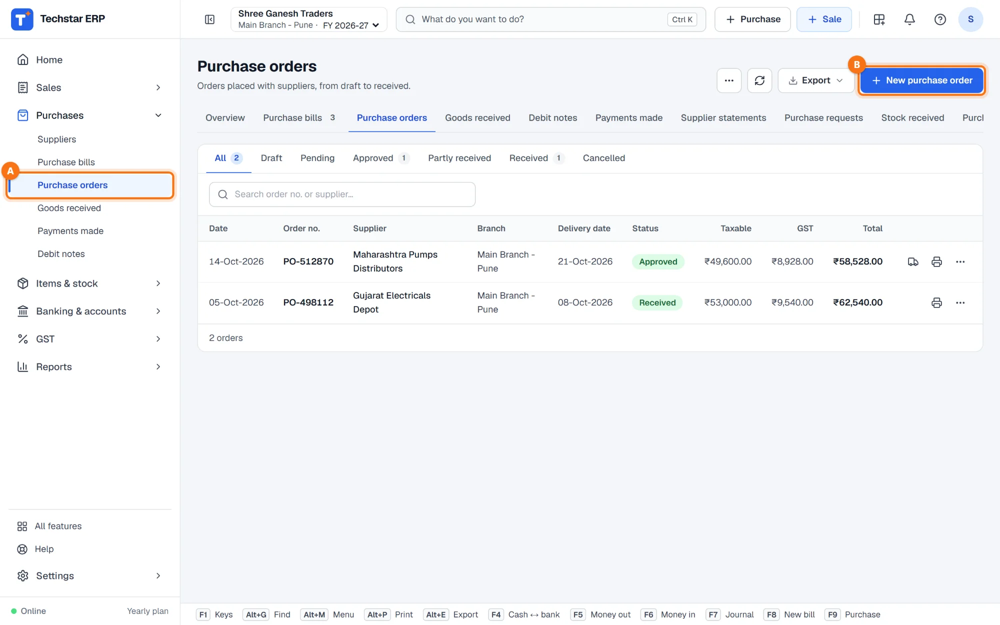
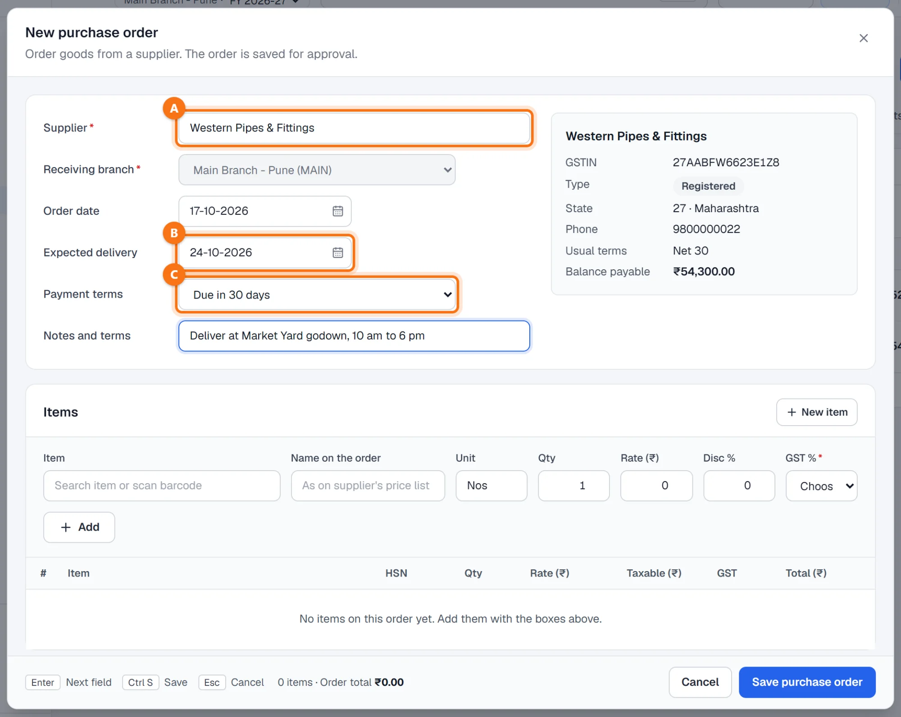
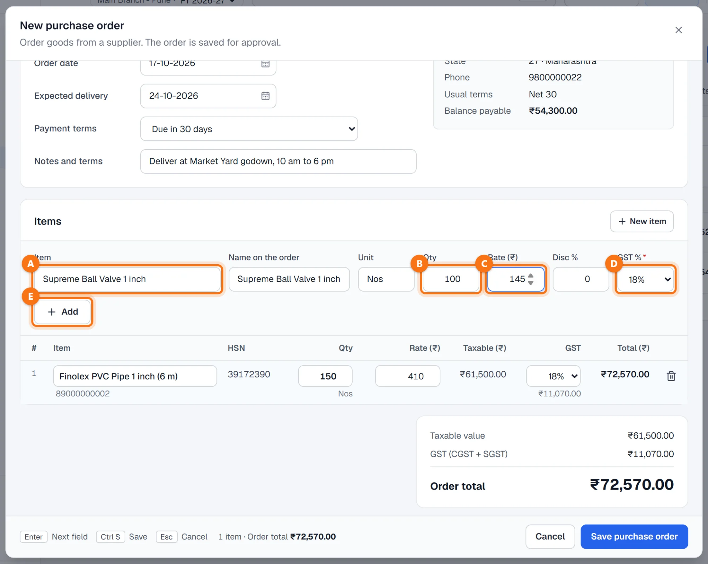
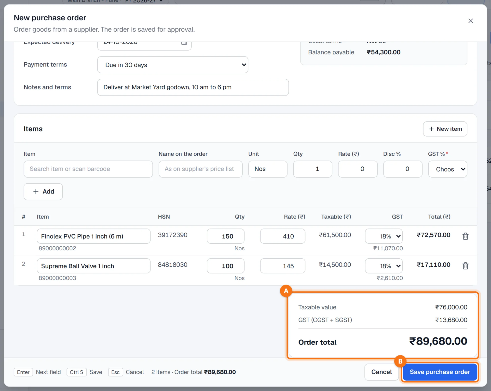
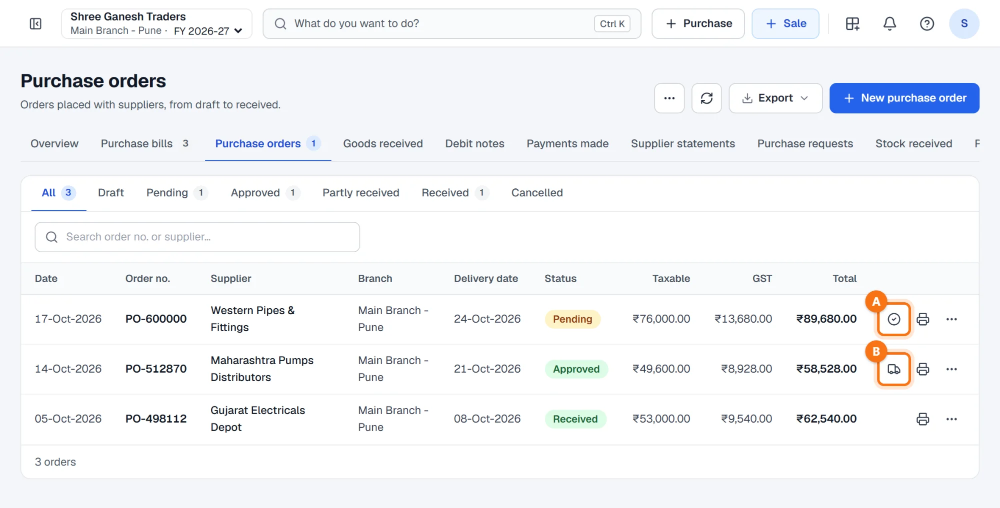
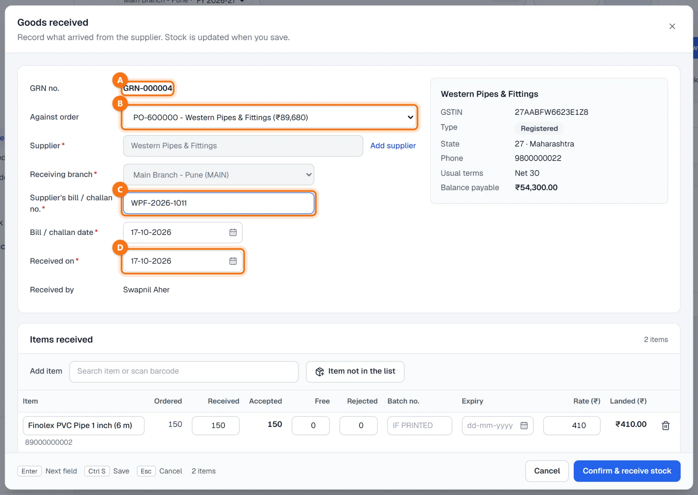
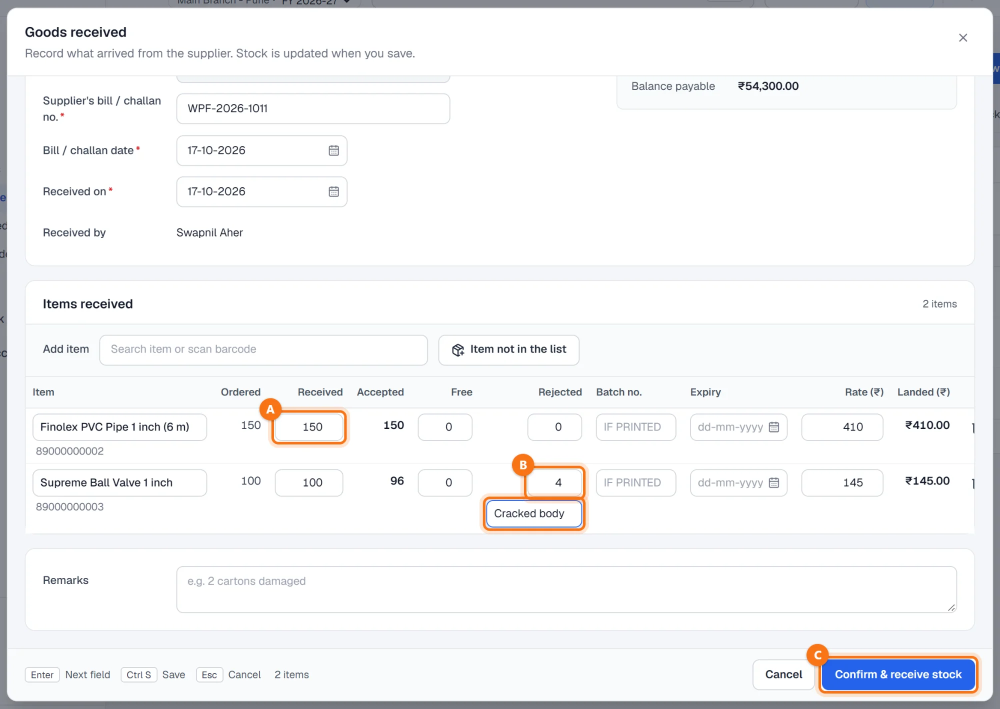
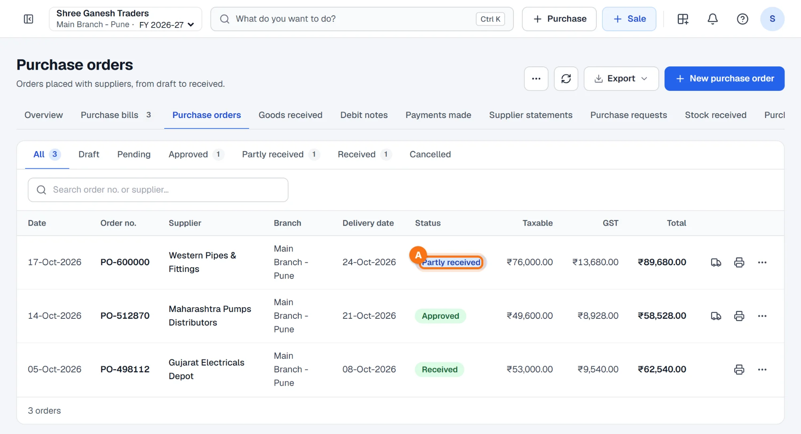
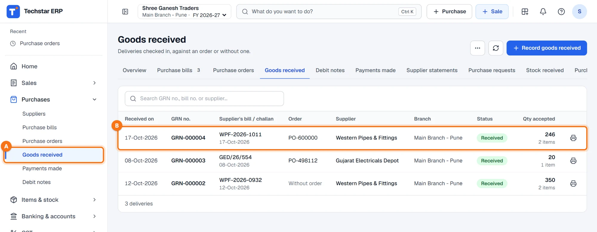

Techstar ERP is also in Hindi and Marathi. Click the round button with your initial (top right) → Language → हिन्दी or मराठी. The menu changes to that language; invoices and other legal documents print as usual. The screenshots in this guide use the English menu.
Before you start
The supplier and the items should already be in the ERP (see How to add a supplier). A new item can also be added from the order with + New item.
Two documents, one flow: the purchase order (PO) is what you ask the supplier for; the goods received note (GRN) is what actually arrived. Stock goes up only with the GRN — the order itself does not change stock or accounts.
Open the purchase orders
In the left menu click Purchases → Purchase orders A, then + New purchase order B.
The list shows each order with its date, supplier, branch, delivery date, status and total. The tabs above the list filter by status: Draft, Pending, Approved, Partly received, Received and Cancelled.

Choose the supplier, delivery date and terms
- Supplier A — type the name or GSTIN and pick the supplier. Their GSTIN, State, phone, usual terms and balance payable appear on the right.
- Receiving branch — the branch where the goods should arrive. It is fixed to your own branch if your user belongs to one.
- Order date — today by default. Expected delivery B — a week later by default; change it to the date agreed with the supplier.
- Payment terms C — for example Due in 30 days, Pay on delivery or Paid in advance / at purchase.
- Notes and terms — delivery instructions, freight or packing, printed on the order.

Add the items
- In Item A search the item or scan its barcode. The name, unit, purchase rate and GST rate come from the item master. Name on the order can be changed to the name on the supplier's price list.
- Enter the Qty B and check the Rate (₹) C (before GST). Add a Disc % if the supplier gives one.
- Check GST % D. If the item has no GST rate yet, it shows Choose and must be chosen.
- Click + Add E. The line goes into the table below, where the name, quantity, rate and GST rate can still be changed, or the line removed.

Check the total and save
The totals A show the taxable value, the GST and the order total. The tax type follows the supplier's State and your branch's: GST (CGST + SGST) in the same State, GST (IGST) across States.
Click Save purchase order B or press Ctrl + S. The order gets its number (for example PO-600000) and is saved as Pending, waiting for approval.

Approve the order
On the order's row click the tick icon A (Approve order). The status changes to Approved and the message says that goods can now be received against it.
An approved order shows the truck icon B (Receive goods). Goods are received only against an approved or partly received order.

The printer icon prints the order for the supplier. Under ⋯ you can Amend order (change quantities or rates; the revision is kept), record Advances paid against the order, or Cancel order while nothing has been received.
Record the goods received
When the goods arrive, click the truck icon on the order. The Goods received window opens with the order already filled in:
- GRN no. A — the next GRN number is proposed for you.
- Against order B — the order. The supplier, branch and items come from it.
- Supplier's bill / challan no. C and Bill / challan date — as printed on the papers that came with the goods (required).
- Received on D — the day the goods arrived. Received by is your name.

Enter what was received, accepted and rejected
Each line shows the quantity Ordered, and Received A starts at the quantity still to come. Count the goods and correct it if needed.
| Column | What to enter |
|---|---|
| Received | How many arrived. |
| Rejected | Damaged or wrong units B. A box appears for the reason (Why rejected). Rejected units do not go into stock. |
| Accepted | Worked out for you: received minus rejected. |
| Free | Free or bonus units of a scheme. |
| Batch no. / Expiry | Only if printed on the goods. |
| Rate (₹) / Landed (₹) | The order rate, and the cost per unit with free units spread in. |
Click Confirm & receive stock C or press Ctrl + S.

After the GRN
The message confirms the GRN with the supplier's bill number and Stock updated. At the same time:
- the accepted and free quantities are added to stock at the receiving branch;
- the order's received quantities are updated: it becomes Partly received A when something is still to come, or Received when everything has arrived. The truck icon stays on a partly received order for the next delivery.

The GRN appears under Purchases → Goods received A B with the supplier's bill or challan, the order, the status and the quantity accepted. The printer icon prints the GRN. Use + Record goods received there for goods that came without an order.

The GRN is not the bill. The GST credit and the amount you owe the supplier are recorded when you enter the supplier's bill. Enter it under Purchases → Purchase bills and choose this GRN in Against GRN — the items are filled in and the stock is not added a second time. See How to add a purchase bill.
Common questions
The goods came without a purchase order.
An item on the delivery is not in my item list.
The rest of the order comes later.
Can I change an order after sending it?
How do I see goods received but not billed yet?
More guides
Screenshots are from Techstar ERP with a demo company (Shree Ganesh Traders, Pune). All names, GSTINs, amounts and document numbers are sample data.